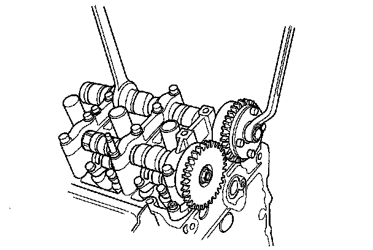
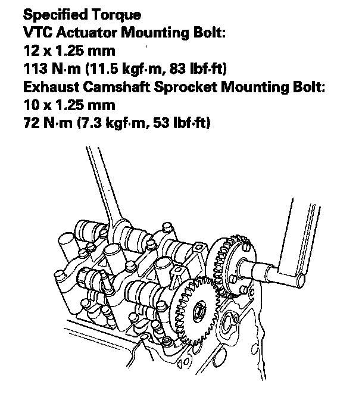

VTC Actuator, Exhaust Camshaft Sprocket Replacement
VTC Actuator, Exhaust Camshaft Sprocket ReplacementRemoval
1. Remove the cam chain.
2. Hold the camshaft with a 27 mm open-end wrench, then loosen the variable valve timing control (VTC) actuator mounting bolt and exhaust camshaft sprocket mounting bolt.

3. To the VTC actuator is reused, do the following steps.
-1 Remove the intake camshaft, and seal the advance holes and retard holes in the No. 1 camshaft journal with tape.
-2 Punch a hole in the tape over one of the advance holes.
-3 Apply air to the advance hole to release the lock.
4. Remove the VTC actuator and exhaust camshaft sprocket.
Installation
1. Install the VTC actuator and exhaust camshaft sprocket.
NOTE: Install the VTC actuator to unlock position.
2. Apply engine oil to the threads of the VTC actuator mounting bolt and exhaust camshaft mounting bolt, then install them.
3. Hold the camshaft with an open-end wrench, then tighten the bolts.

4. Hold the camshaft, and turn the VTC actuator clockwise until you hear it click. Make sure to lock the VTC actuator by turning it.
5. Install the cam chain.